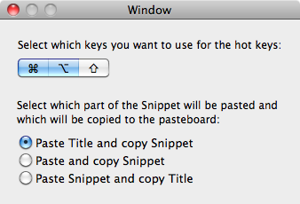

You can customize two aspects of the behaviour of Snipper: The global hotkeys to trigger Snipper's paste function and the part of the Snippet that should be pasted (title or the snippet text).
The preferences window:

The global hotkeys allow you to paste a Snippet without using the mouse (Paste a Snippet)
Select any combination of key modifiers to use them to trigger Snipper from other applications. You have to specify at least one modifier.
You can specify which part of the Snippet will be pasted and which will be copied to the pasteboard. This function enables you for example to automatically paste the Snippet's title into a form field and manually paste the Snippet's text into a second field.
Select the paste mode you like most.